国・地域の見分け方
- ドメインは.th
- 車は左側通行
- タイ語（ภาษาไทยกลาง）が一般的に使用される
- ボラードが白黒の角ばった感じ (by Geotips )
- 電柱も角ばった感じ(by Geotips )だがこれだけでタイを押してはいけない
見つかる標識
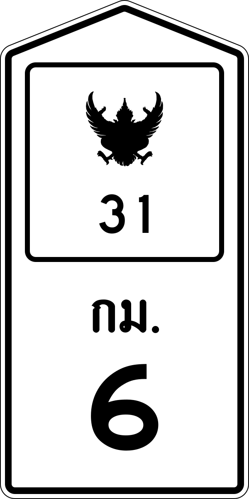
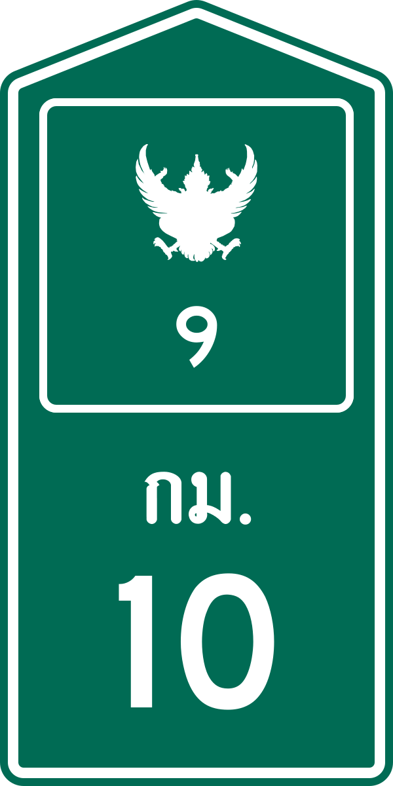
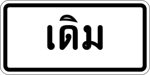
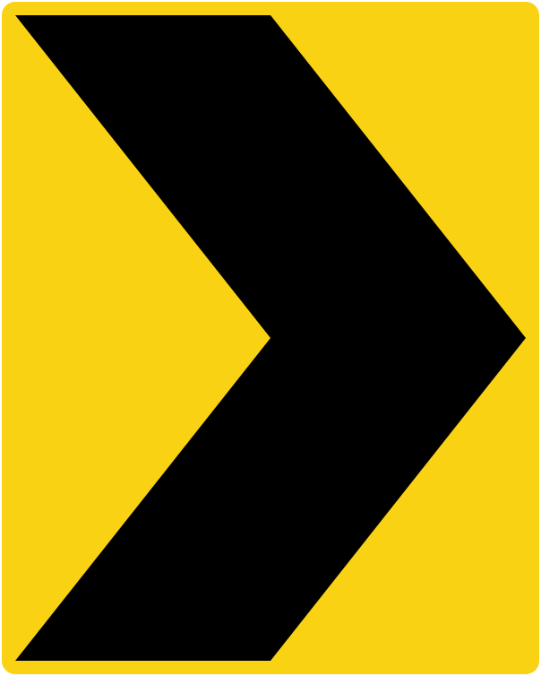
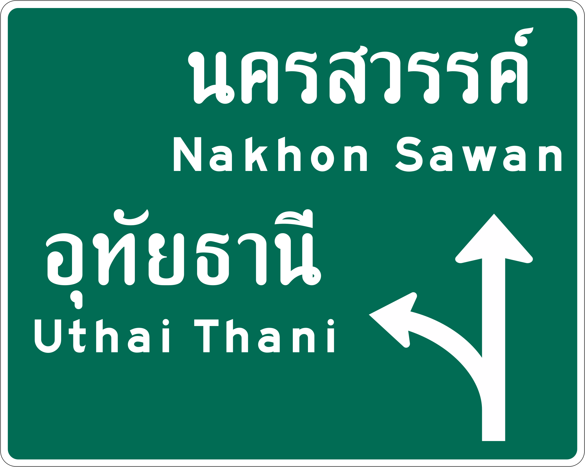
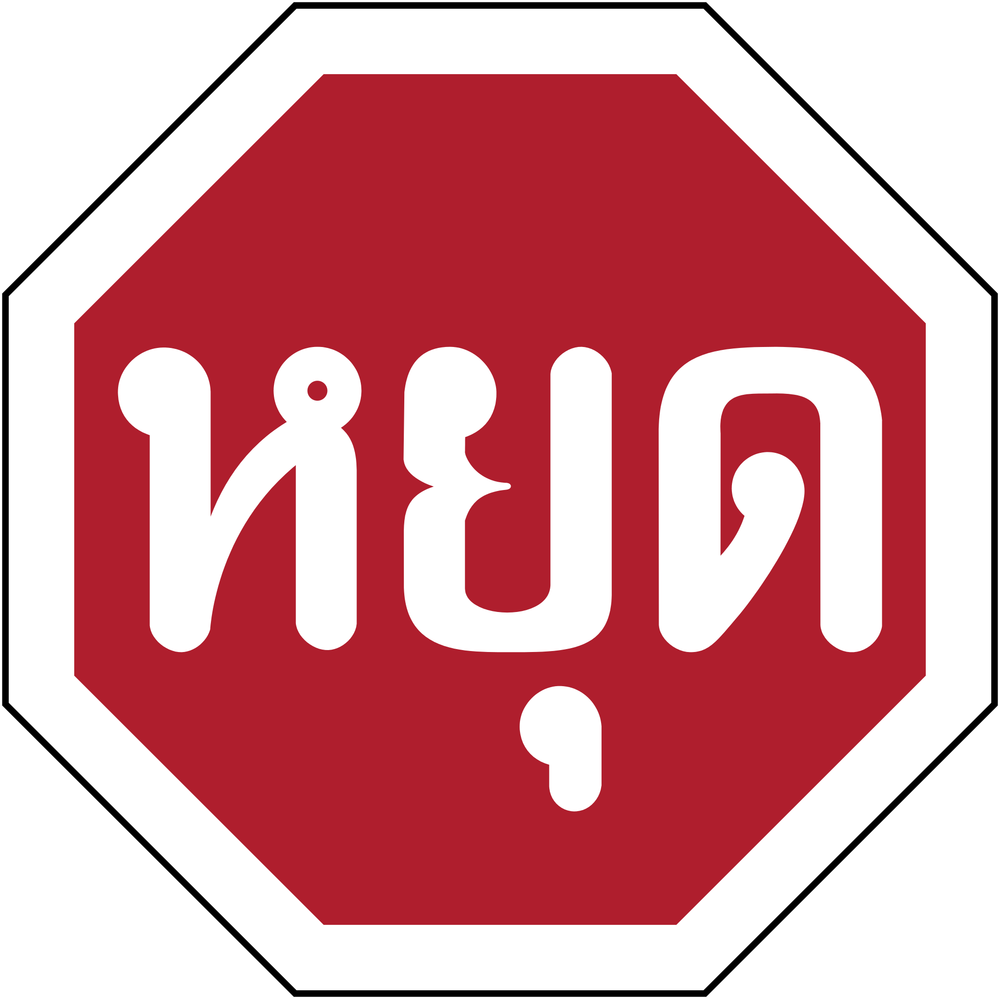
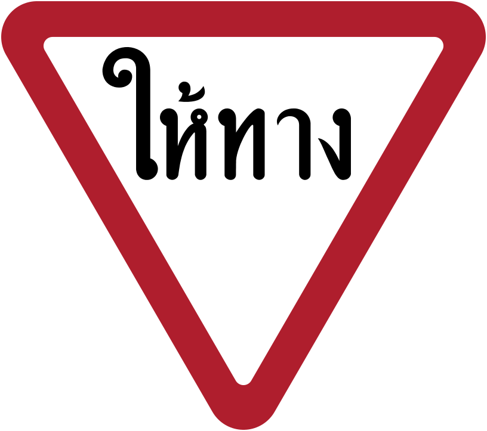
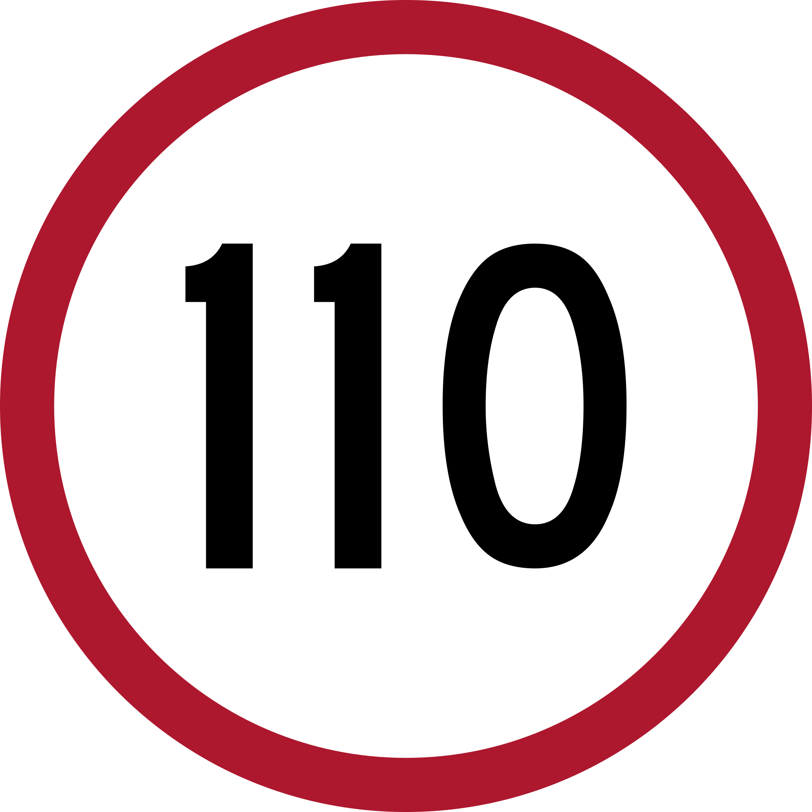

By Adbar - Own work, CC BY-SA 3.0, Link
似たような角張ったボラードがラオスに、角ばった電柱がスリランカやフィリピンにもあるので注意。車のナンバーが黄色・電柱のコイルが大きい・穴が開いた電柱があるならスリランカ、車のナンバーが緑っぽい・独特な形の乗り物があるならばフィリピンを考えてみる。

白いボラードがあり、これを使って場所も絞り込める(参考文献 【5k戦略】気づきにくい道路番号を読み取る【GeoGuessr】)。上のシンボルが黒塗りならばprovincial roadなのでマップ上の紺色のマークの道に行ってみる(by sound_of_silence_wl )。
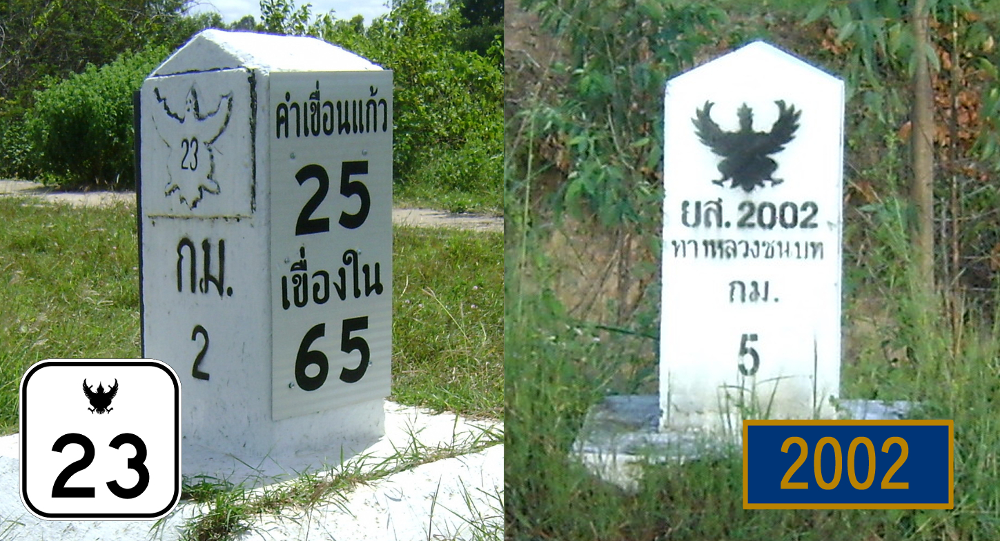
左側通行で、一般乗用車は白色のナンバーが多く、タクシーのナンバープレートは黄色のものが多い。ラオスは一般の車が黄色かつ右側通行。
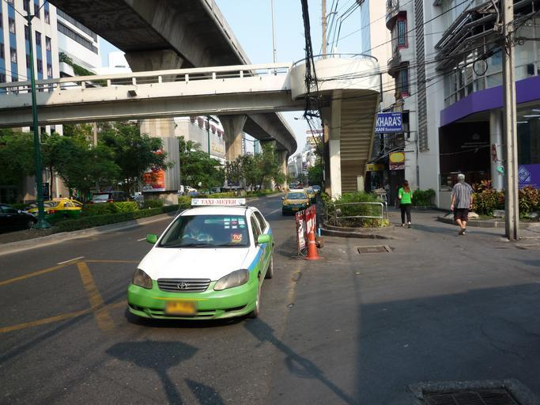

Public Domain
フィリピンと同じくコンクリート製の道路が多い。個人的には舗装されていない郊外は国間違えがち。
.jpg#/media/File:Main_road_in_Ko_Lanta_(5).jpg)
By Krzysztof Golik - Own work, CC BY-SA 4.0, Link
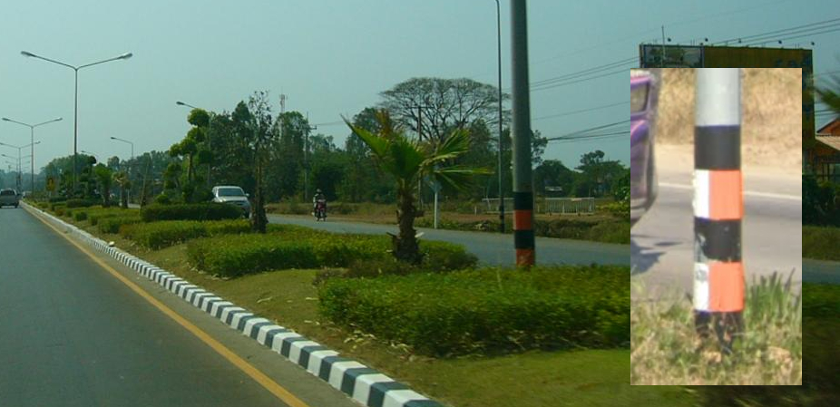
数は多くないがインドネシアでもオレンジ線が見つかるので『オレンジ線➪タイ』と断定してはいけない
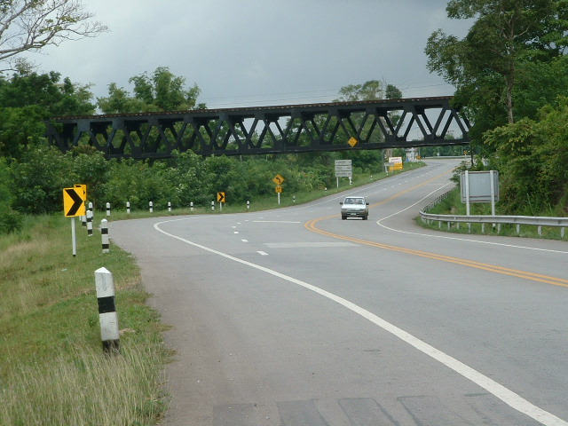
タイ語が公用語となっている
| 言語名 | 表記 |
|---|---|
| 日本 | 日本料理レストラン |
| シンハラ | ජපන් අවන්හල |
| アッサム | জাপানীজ ৰেষ্টুৰেণ্ট |
| カンナダ | ಜಪಾನೀಸ್ ರೆಸ್ಟೋರೆಂಟ್ |
| グジャラート | જાપાનીઝ રેસ્ટોરન્ટ |
| タミル | ஜப்பானிய உணவகம் |
| テルグ | జపనీస్ రెస్టారెంట్ |
| ベンガル | জাপানি রেস্তোরা |
| ヒンディー | जापानी रेस्टोरेंट |
| クメール | ភោជនីយដ្ឋានជប៉ុន |
| ラオ | ຮ້ານອາຫານຍີ່ປຸ່ນ |
| タイ | ร้านอาหารญี่ปุ่น |
北陸地方でよく見られる8番ラーメンは今タイで人気チェーンになりつつある(参考文献 海外事業 | 野菜らーめんの8番らーめん)。
州・地域の絞り込み
- 農業・植生の種類・土の色が場所によって異なる
- 農作物の分布データ出典：U.S. DEPARTMENT OF AGRICULTUREUSDA(USDA)
- 土壌の分布データ：OpenDevelopment Thailand - Dominant Soil Types
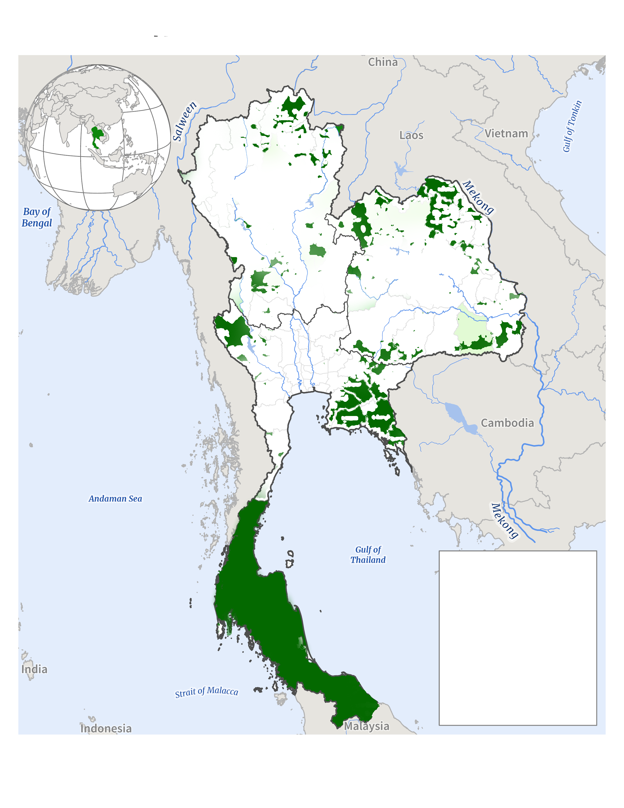
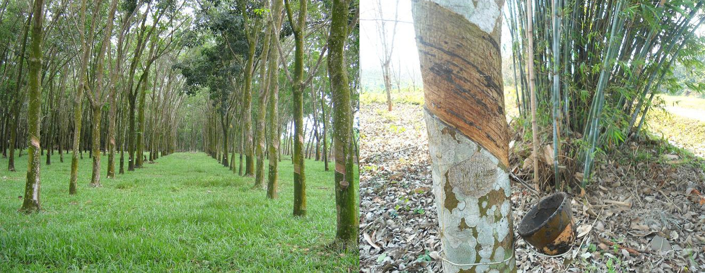
ゴムの木は一般には南の半島側に多い。北やベトナムにもバラバラに分布していて、100%南というわけではない(参考文献 Wongsapai, Wongkot, et al. 『Biomass supply chain for power generation in southern part of Thailand.』 Energy Reports 6 (2020): 221-227.)。
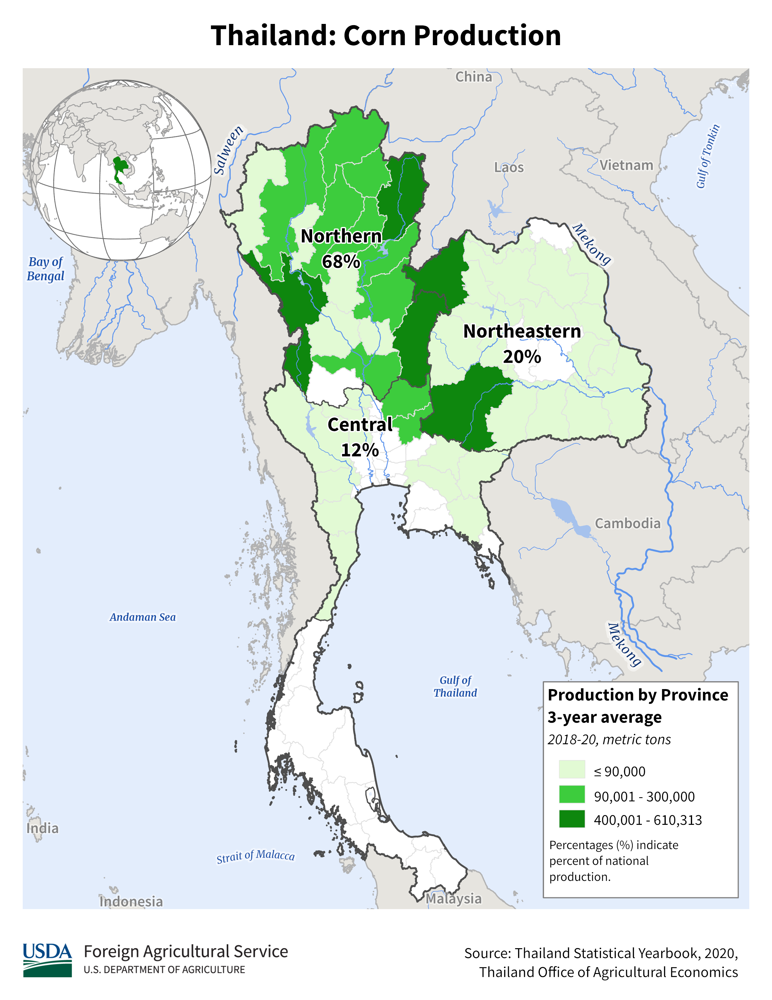
アメリカなどと同じくコーンと大豆の生産地は基本的にほぼ同じエリア、タイの場合も大豆は北の方のみ。
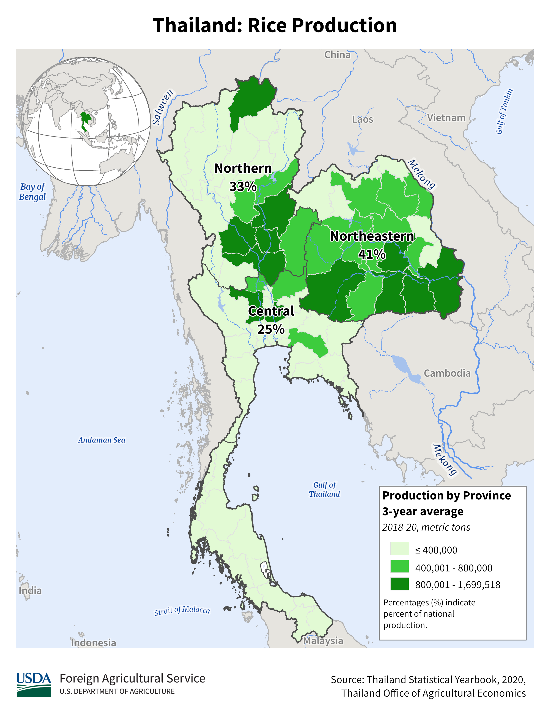
田んぼはカンボジア・ラオスのある方向に多い
北西部・北部
南東（カンボジアに面する付近）。北部よりも少し赤みがかっている？
南部（半島・海沿い）、アブラヤシも散見される。
- 市外局番で地域がわかるかもしれない

By Ponpan - This vector image includes elements that have been taken or adapted from this file.
都市・町の絞り込み
- Koh Samuiという離島がある
- Koh Lipeに徒歩のカバレッジがある
_-_panoramio.jpg#/media/File:Walking_street_At_Lipe_Island(Koh_Lipe)_-_panoramio.jpg)
{{< amazon-links >}}